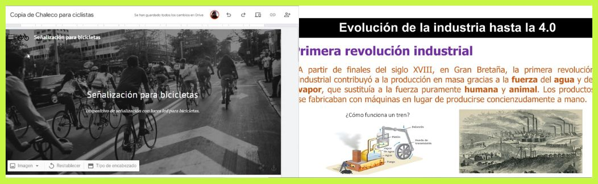
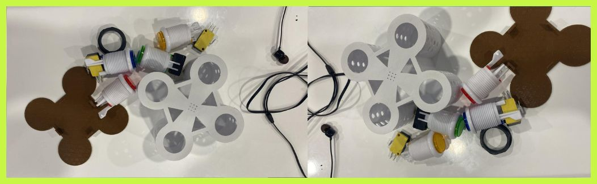
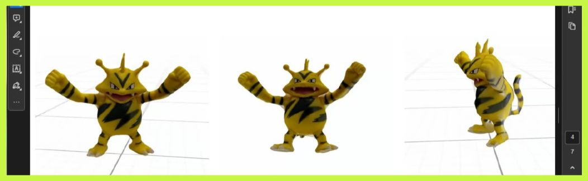
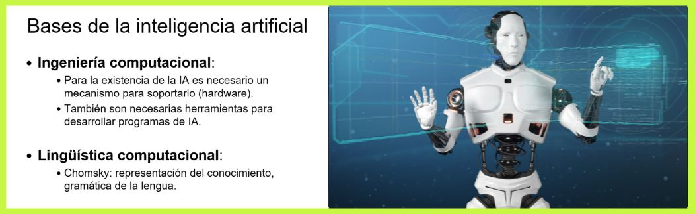
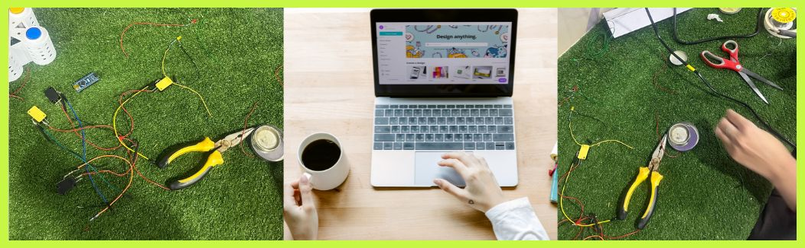
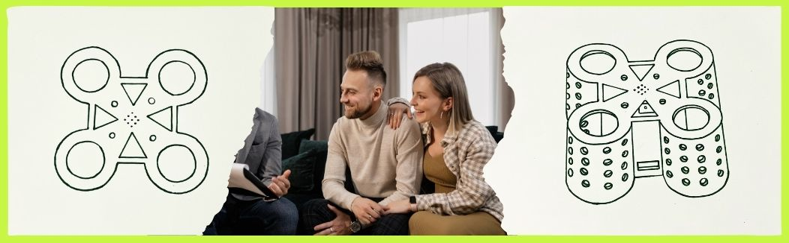
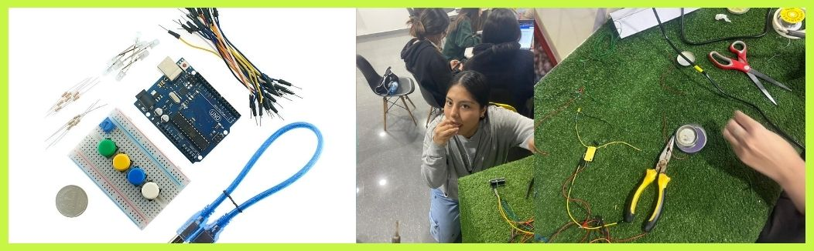

Clase 23

El martes 4 de junio, durante nuestra clase online en el laboratorio, discutimos la teoría sobre la revolución de la Industria 4.0, el IoT y la transición hacia la Industria 5.0. Además, el profesor explicó el informe grupal sobre el juego "Simón Dice" y revisó nuestras preguntas para la entrevista relacionada con nuestra investigación sobre este juego. Fue una sesión productiva que nos ayudó a entender mejor estos temas y nuestro proyecto.
Clase 24

En la clase de Laboratorio 2 presencial del miércoles 5 de junio, aprendimos a soldar cables. Primero, usamos grasa para mejorar la conductividad, luego unimos los cables y aplicamos soldadura, frotándola nuevamente para asegurarnos de que queden bien conectados. El propósito de esto es que el circuito de cables sea más corto y eficiente, permitiendo que encaje bien en nuestro juego de Simón Dice.
Clase 25

El día lunes 10 de junio, en la clase online de laboratorio, vimos la parte teórica sobre cómo escanear un objeto y convertirlo en 3D utilizando software como Widar o Kiri Engine. El profesor indicó que debíamos descargar estos programas para realizar el escaneo en la clase presencial del día siguiente. Luego, nos dividimos en grupos para avanzar en nuestros proyectos de "Simón dice" y aproveché para entrevistar a la ejecutiva para nuestro informe.
Clase 26
El día martes 11 de junio, en la clase presencial, el grupo se dividió en dos: algunos escanearon sus objetos para convertirlos en 3D utilizando el software Widar o Kiri Engine, mientras que otros continuamos soldando nuestro proyecto de "Simón dice". Avanzamos considerablemente y, en una tercera etapa, también progresamos en la preparación de nuestra presentación en PPT.
Clase 27

El día martes 18 de junio, en clase virtual, estudiamos la teoría de la inteligencia artificial, incluyendo sus fundamentos y aplicaciones. Discutimos temas como el aprendizaje automático y los desafíos éticos de la IA. Posteriormente, nos reunimos en grupos y consultamos al profesor sobre una duda del público objetivo, lo cual nos ayudó a seguir avanzando con nuestra página web.
Clase 28

El día miércoles 19 de junio, en clase presencial, Xiomara y yo trabajamos en la soldadura para nuestro prototipo, mientras el resto del equipo editaba la página web y el PDF del proyecto "Simón Dice". Esta división de tareas nos permitió avanzar en la parte técnica y documental del proyecto, asegurando un progreso balanceado y eficiente.
Clase 29

El día martes 25 de mayo en clases online el profesor nos indicó que debíamos entregar un trabajo para nuestra nota final. Nos organizamos en grupos y avancé con mi buyer persona y la web. Además, trasladamos el mockup renderizado del juego a Illustrator.
Clase 30

Miércoles 27 de junio en clases presenciales, terminamos de soldar, pero al conectarlo a la laptop, descubrimos un problema. Decidimos volver a revisarlo y corregirlo el viernes.